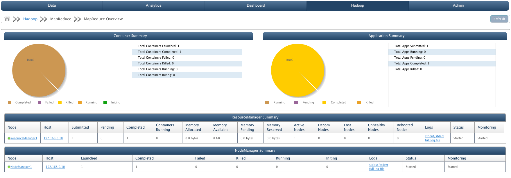

Dashboard - MapReduce Overview
In this Chapter
Dashboard shows the monitoring details for QueryIO cluster.
Dashboard displays:
MapReduce Overview
MapReduce is a framework for processing parallelizable problems across huge datasets using a large number of computers (nodes), collectively referred to as a cluster
(if all nodes are on the same local network and use similar hardware) or a grid
(if the nodes are shared across geographically and administratively distributed systems, and use more heterogenous hardware).
A MapReduce job usually splits the input data-set into independent chunks which are processed by the map tasks in a completely parallel manner. The framework sorts the outputs of the maps, which are then input to the reduce tasks. Typically both the input and the output of the job are stored in a file-system.
The framework takes care of scheduling tasks, monitoring them and re-executes the failed tasks.
The MapReduce framework consists of a single master ResourceManager and one NodeManager per cluster-node.
The ResourceManager is the ultimate authority that arbitrates resources among all the applications in the system.
The NodeManager is the per-machine framework agent who is responsible for containers, monitoring their resource usage (cpu, memory, disk, network) and reporting the same to the ResourceManager/Scheduler.
MapReduce Overview displays Container summary and Application Summary. It also displays ResourceManager summary and NodeManager summary.

Container Summary
Container Summary is gathered form NodeManager. It also displays a pie chart containing container information.
- Total Containers Launched: Number of containers launched.
- Total Containers Completed: Number of containers completed.
- Total Containers Failed: Number of containers failed.
- Total Containers Killed: Number of containers killed.
- Total Containers Running: Number of containers running.
- Total Containers initing: Number of containers initializing.
Application Summary
Application Summary is gathered from ResourceManager. It also displays a pie chart showing application information.
- Total Apps Submitted: Number of MapReduce Applications submitted to cluster.
- Total Apps Running: Number of MapReduce Applications running on cluster.
- Total Apps Pending: Number of MapReduce Applications pending.
- Total Apps Completed: Number of MapReduce Applications completed processing.
- Total Apps Killed: Number of MapReduce Applications killed.
ResourceManager Summary
It displays certain attributes about the ResourceManager in the cluster in a tabular form. Summary attributes are:
- Node: Unique Identifier of the ResourceManager. Click on ResourceManager name to view detailed summary.
- Host: IP address of the host on which ResourceManager is configured.
- Apps Submitted: Number of applications submitted.
- Apps Pending: Number of applications pending.
- Apps Completed: Number of applications completed.
- Containers Running: Number of containers running.
- Memory Allocated: Memory space allocated to ResourceManager.
- Memory Available: Memory space available.
- Memory Pending: Memory space pending.
- Memory Reserved: Memory space reserved.
- Active Nodes: Number of active nodes.
- Decommissioned Nodes: Number of Decommissioned nodes.
- Lost Nodes: Number of nodes lost.
- Unhealthy Nodes: Number of unhealthy nodes.
- Rebooted Nodes: Number of nodes rebooted.
- Status: Status of Resource Manager as 'Started' or 'Stopped'
- Monitoring: State of Resource Manager monitoring i.e. whether Resource Manager monitoring is started or stopped or not responding.
NodeManager Summary
It displays certain attributes about the NodeManager in the cluster in a tabular form. Summary attributes are:
- Node: Unique ID of the NodeManager. Click on NodeManager name to view detailed summary.
- Host: IP Address of the host machine on which NodeManager is configured.
- Containers Launched: Number of containers launched.
- Containers Completed: Number of containers completed.
- Containers Failed: Number of containers failed.
- Containers Killed: Number of containers killed.
- Containers Running: Number of containers running.
- Containers initing: Number of containers initializing.
- Logs: Click to view full log file of stdout/stderr logs of NodeManager.
- Status: Status of NodeManager as 'Started' or 'Stopped'.
- Monitoring: State of NodeManager monitoring i.e. whether NodeManager monitoring is started or stopped or not responding.
Copyright © 2015 QueryIO Corporation. All Rights Reserved.
QueryIO, "Big Data Intelligence" and the QueryIO Logo are trademarks
of QueryIO Corporation. Apache, Hadoop and HDFS are trademarks of The Apache Software Foundation.